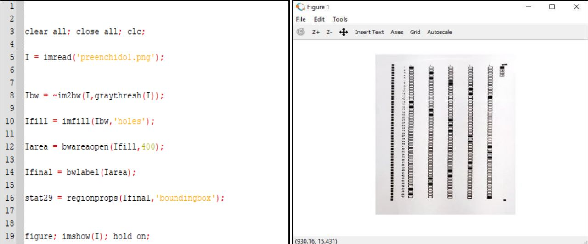
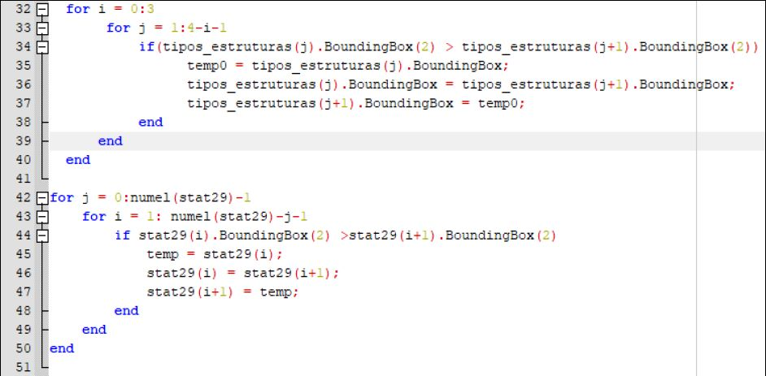
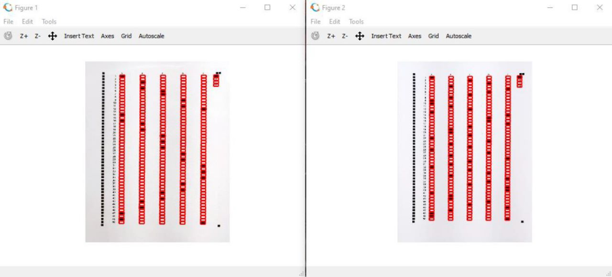

Optical Mark Recognition System
This project implements an Optical Mark Recognition (OMR) system in Octave to correct multiple-choice answer sheets. Octave is a free software largely compatible with Matlab.
Overview
The implementation begins by loading the image, converting it to black and white, and displaying it.

Rectangles are then placed around each answer option on the answer sheet. The code removes the question types (A, B, C, D) from the main matrix and stores them in a separate vector.
Then, bubble sort is used to sort the question type boxes and answer boxes in the Y-axis to account for potential image rotation. The matrix is then sorted in rows, and the questions are sorted in ascending order. The number of black pixels in each answer option square is counted. Similarly, the answers are sorted by row.

The code checks which answer was selected based on the previously obtained values or if no answer was selected. Any question with two or more selected answers is marked as invalid. The marked question type is identified by the square with the highest number of black pixels.
The answer key is loaded based on the identified question type. The same procedure is applied to the answer key matrix as for the previous images. The student's answer matrix is compared with the answer key, and the score is calculated and displayed.

Results and Conclusion:
The image recognition results show that all questions on the answer sheet, including the question type, are correctly recognized and the red rectangles are appropriately positioned. The command window displays the score and the number of questions with multiple answers, which were manually counted and verified to match the system's results.